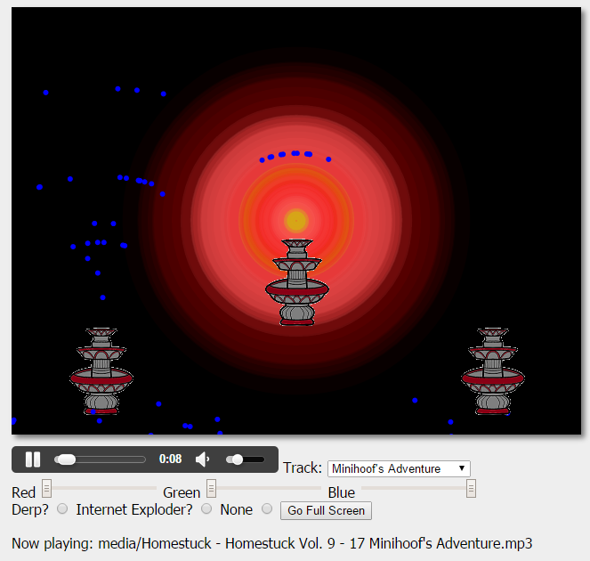
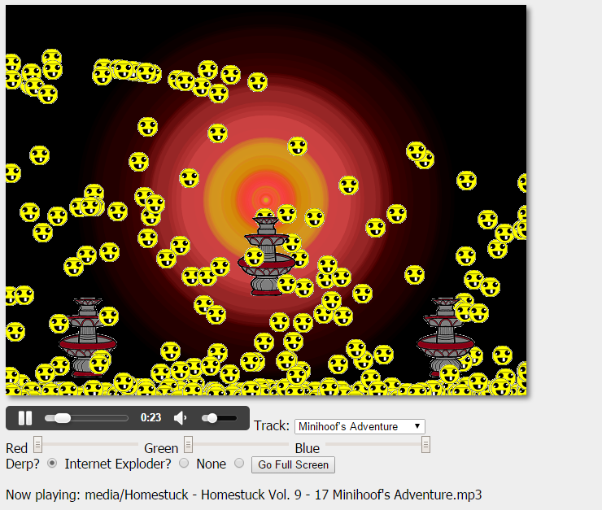
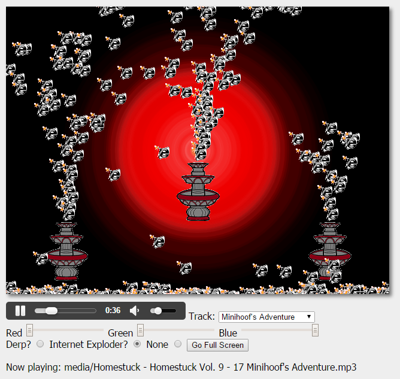
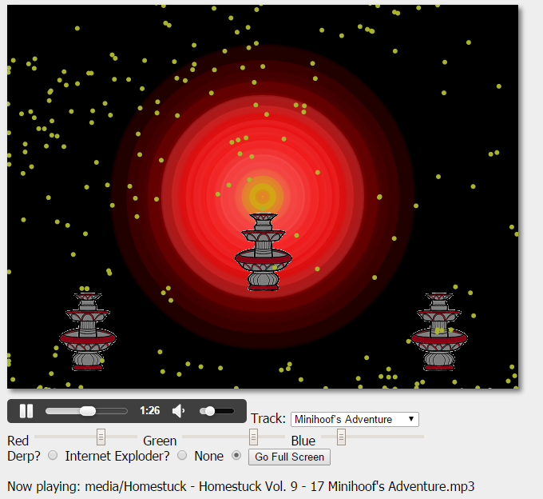

My project will be, as the title implies, a Music Fountain. So essentially there will be multiple fountains that are controlled by the music that is being played. The music will influence both the speed at which water is sprayed from the individual fountains and the amount of water that is sprayed per second. The user will be able to change the color of the particles that are sprayed from the fountains via sliders below the canvas that will control the R,G, and B values respectively. The user can also enable either derpy faces or the internet exploder icon in the stead of the normal water droplets via radio buttons. There is also a red-based audio visualization in the background from the audio visualizer in class in order to help fill in the empty space.
In phase 1 I decided to do music fountains and pretty much everything that is in the abstract aside from the last two sentences. In phase 2, I decided against the uploading a file due to looking into the file IO stuff for JS and it didn't look like something I would have had the time to do, especially after having to spend a weekend in the hospital. I also decided against the clicking to create particles idea as the current backend that I had created would not support such a feature easily. In phase 3, I decided to add the radio buttons for the derp face and internet exploder mostly due to some jokes that were throw around both in class as well as with some of my friends from the class (namely Joe). The red-based circular visualization was added in the end in order to fill some of the blank space since the fountains were on the small side and there ended up being a lot of blank space when the music was quiet.
I think I created a pretty nice audio visualization based off of water fountains. The formulas that I used make it so that songs get varied results and it makes for a very fun experience. I have used quite a bit from what we learned in class as well as a couple of things that we did not cover in class like static variables in javascript
Currently the project is done. The only remaining issue is the inconsistent frame-rate due to the rather heavy back-end that I developed
since it has to parse the data many times. Here are some images of it working.

There were two main inspirations for this project. The first was the audio visualizer in class exercise that we did a couple of weeks ago (as of writing this). The second source of my inspiration is real-life music fountains where the fountains are programmed to fluctuate how much water they are spraying depending on the music that is playing. Examples of these fountains can be found all over the internet. For a more detailed description of how they work, you can visit This Wikipedia Page.
DerpyDerp is the image I made for SG1, internet exploder picture from https://mentalbiscuits.wordpress.com/tag/internet-exploder/, base fountain image found from DragoArt.com, audio from the Homestuck Vol.9 album that i purchased and own and from the original audio visualizer made in class